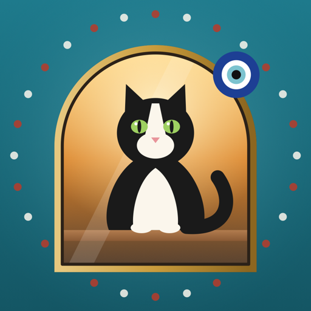
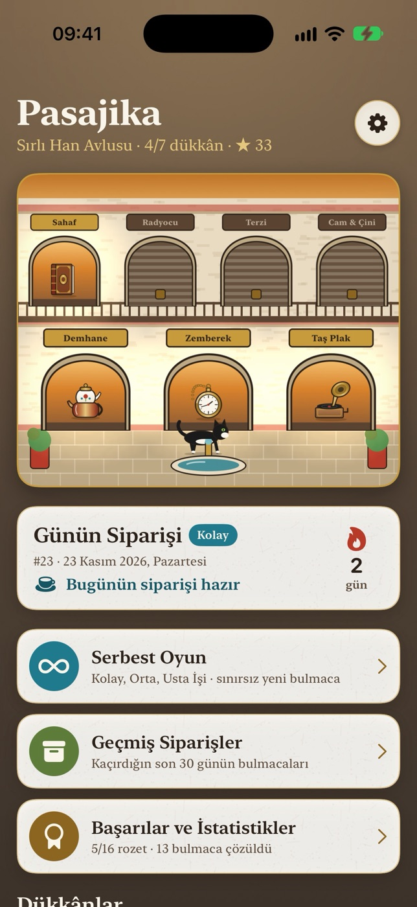
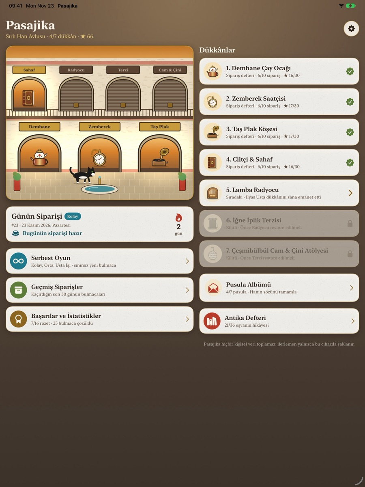
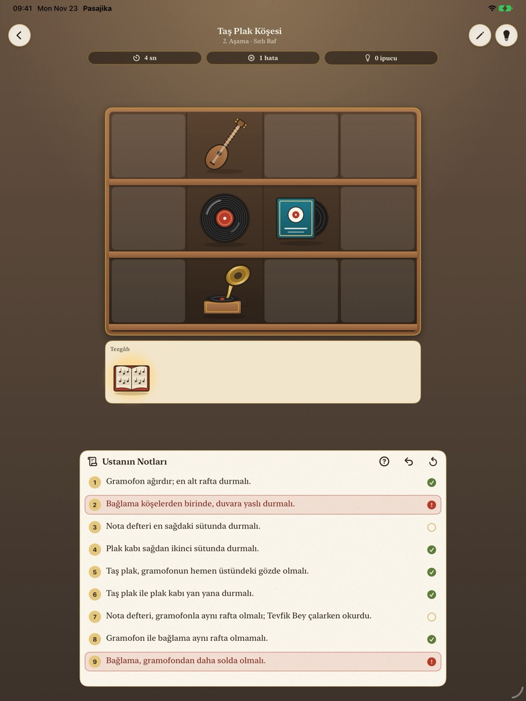
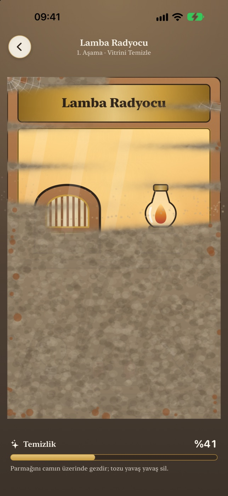
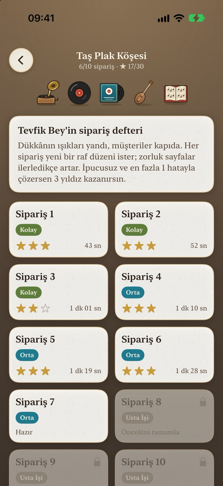
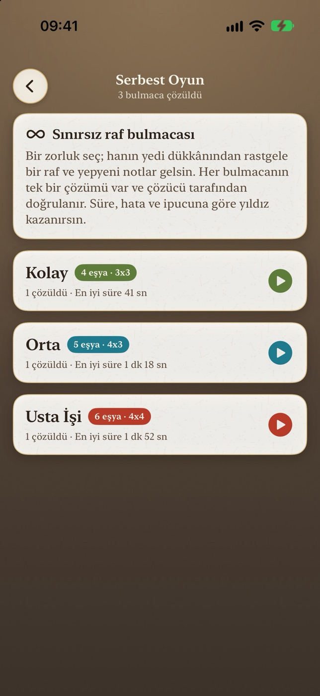
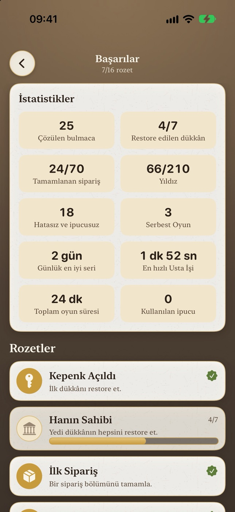

Logic puzzle game · in Turkish
Pasajika: Sırlı Raf
Your grandfather left you an old Istanbul inn. Dust off its seven craft shops, arrange each shelf by the master's notes and uncover the secret of the inn. 70 order levels, unlimited Free Play and a new puzzle every day, the same for everyone.
- iPhone and iPad · iOS 17+
- No ads
- No account
- Works offline
- No data collected

How to play
One shop in three steps
Every shop has its own story, its own items and its own master's notes.
-
Wipe the dust
Run your finger over the shop window and watch a sparkling shop appear beneath the dust, with gentle haptics and brush sounds.
-
Arrange the shelf
The master's notes describe exactly one correct arrangement. Drag the items and satisfy every rule at once. If you get stuck, the hint shows the next correct step.
-
Open the letter
A handwritten note from your grandfather waits in every shop's secret drawer. Collect seven words and complete the motto of the inn.
The story is only the beginning
After the seven shops are restored, the inn still has plenty of work every day.
Order books
Every restored shop opens 10 customer orders from Easy to Master, 70 levels in total. Earn 1–3 stars based on time, mistakes and hints.
Free Play
Pick Easy, Medium or Master for endless new shelf puzzles, each with exactly one solution.
Daily archive
Catch up on Daily Orders from up to the last 30 days; your streak is not affected.
Thinking tools
Notes mode to mark impossible cells, undo, a two-step hint and an optional Check Mode.
Achievements and catalog
16 badges, detailed statistics and the stories of 36 antiques that unlock as you clean the windows.
New every day
Daily Order
Every morning all the customers of the inn wait for the same order. Solve it, grow your streak and share your result with friends.
- Everyone solves the same puzzle on the same day, with no server needed.
- Easy early in the week, medium midweek, master level at the weekend.
- Time, mistakes and hints are counted; your streak grows every day you solve.
- Share your result with one tap.

iPad and iPhone Duo
Made for big screens too
Full screen on iPad in every orientation and in windowed mode. On wide screens the shelf and the master's notes sit side by side; landscape on iPhone and both displays of iPhone Duo are supported.


Screens
Inside the inn






Our principles
Just you and the game
No ads
No pop-up ads, no waiting timers and no pressure to buy anything.
No account
No sign-up, login or email. Open the app and start playing.
Offline
The whole game, including the daily puzzle, works without an internet connection.
No data collected
Your progress stays on your own device. See the privacy policy.